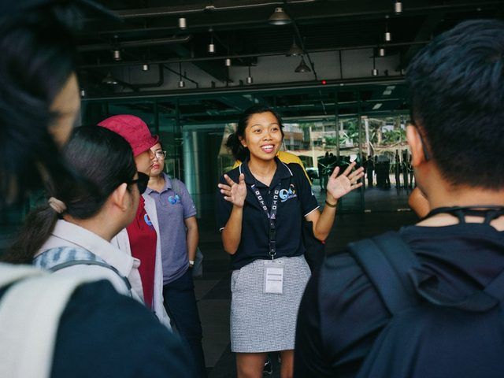
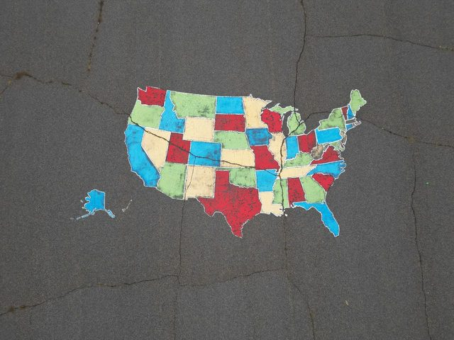
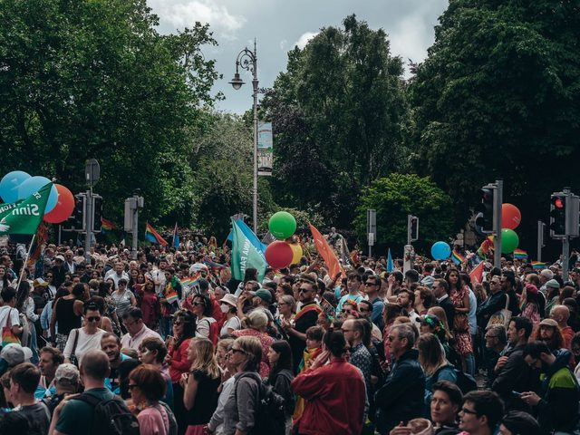
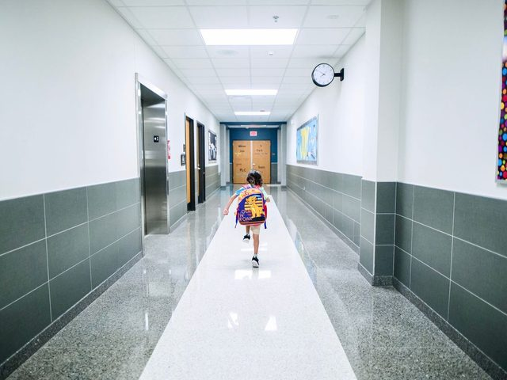
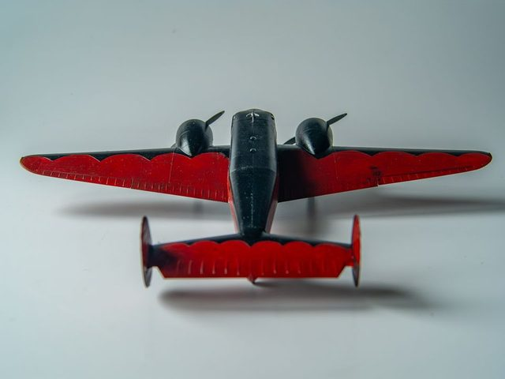
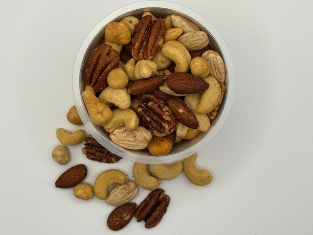
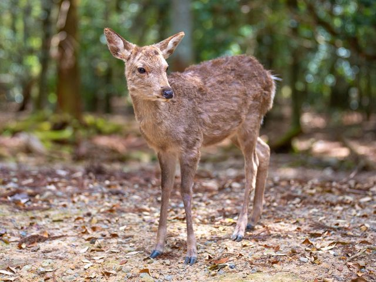

LALA WORD · UNIT 18
一字多義（十八）
A Day Off for Your Mind
21 個單字一字多義
本單元單字一覽
tire 是輪胎，也是「使疲倦」；tear 唸 [tɪr] 是眼淚，唸 [tɛr] 是「撕開」。這個單元有 5 個主題單字、16 個更多單字，是 LaLa Word 的最後一個單元。
tireguidebeatstatetearactivebasebeautychargecrowdflathalljamjudgelambmodelnutpatientsheetshootwild
每個字先聽 🔊，再一個意思一個意思看例句。
1. tire 主題單字．2 個意思

tire
tire - tired - tired - tiring
v.使疲倦tire + 人 + out 使筋疲力盡；feel tired 覺得累
The long walk tired me out.
走了那麼久讓我累壞了。
n.輪胎
My bike has a flat tire.
我的腳踏車爆胎了。
2. guide 主題單字．3 個意思

guide
guide - guided - guided - guiding
v.引導；帶領
The teacher guided us through the museum.
老師帶我們參觀博物館。
n.指南
This book is a guide to Japanese food.
這本書是日本料理指南。
n.嚮導；導遊
Our tour guide speaks three languages.
我們的導遊會說三種語言。
3. beat 主題單字．5 個意思

beat
beat - beat - beaten - beating
v.打敗beat the record 打破紀錄；It beats me. 我不知道
Our class beat Class 3 in the final.
我們班在決賽打敗了三班。
v.打；拍打；攪拌beat the drum 打鼓
Beat the eggs and sugar together.
把蛋和糖一起打勻。
v.（心臟）跳動
My heart was beating fast.
我的心跳得很快。
n.心跳skip a beat 心跳漏一拍
My heart skipped a beat when I saw the test score.
看到考試分數時我心跳漏了一拍。
n.節拍
Clap your hands to the beat.
跟著節拍拍手。
4. state 主題單字．3 個意思

state
複數 states
n.情況；狀態in a state of 處於…的狀態
The old house is in a bad state.
那棟老房子狀況很差。
n.國家；政府
The state pays for the new railway.
政府出資興建新鐵路。
n.州the States 美國
Texas is a big state in the U.S.
德州是美國很大的一州。
5. tear 主題單字．3 個意思
💧
tear
tear - tore - torn - tearing
n.眼淚be in tears 哭了；（眼淚唸 [tɪr]）
Tears ran down her face.
眼淚從她的臉上流下來。
v.撕開（撕開唸 [tɛr]）tear apart 撕碎；be torn 內心掙扎
Don't tear the paper.
不要撕紙。
v.狂奔
The kids tore out of the classroom at lunchtime.
午餐時間孩子們衝出教室。
6. active 更多單字．3 個意思

active
active - more active - most active
adj.活躍的stay active 保持活躍
My grandma is still very active.
我奶奶還是很活躍。
adj.積極參與的play an active role in 在…扮演積極的角色
She is active in the student council.
她積極參與學生會。
adj.（火山）活的
This is an active volcano.
這是一座活火山。
7. base 更多單字．4 個意思

base
base - based - based - basing
n.基地
The climbers returned to their base.
登山者回到基地。
n.底部；基座
The lamp has a heavy base.
這盞燈的底座很重。
n.壘（棒球）
He ran to second base.
他跑上二壘。
v.以…為根據be based on 以…為根據
This movie is based on a true story.
這部電影是根據真實故事改編的。
8. beauty 更多單字．2 個意思
beauty
複數 beauties
n.美人
She was a beauty when she was young.
她年輕時是個美人。
n.美麗Beauty is only skin deep. 美貌只是外表
We enjoyed the beauty of the mountains.
我們欣賞山的美景。
9. charge 更多單字．6 個意思

charge
charge - charged - charged - charging
v.收費
The shop charged me 100 dollars.
這家店向我收了一百元。
n.費用
There is no charge for kids under six.
六歲以下兒童免費。
v.充電
I need to charge my phone.
我要幫手機充電。
v.猛衝
The dog charged at the ball.
狗朝球衝過去。
n.控訴；罪名
He faces a charge of stealing.
他被控偷竊。
n.負責in charge of 負責；take charge of 掌管
Who is in charge of this class?
誰負責這個班？
10. crowd 更多單字．3 個意思

crowd
crowd - crowded - crowded - crowding
n.一群人；人群
There was a big crowd at the concert.
演唱會上人山人海。
v.擠滿be crowded with 擠滿
The night market is crowded with people.
夜市擠滿了人。
v.擠進
We all crowded into the small elevator.
我們全都擠進小電梯。
11. flat 更多單字．8 個意思
flat
flat - flatter - flattest
adj.平的；扁平的
The road is flat and easy to ride on.
這條路很平，很好騎。
adj.固定的（價錢）
The taxi charges a flat fee to the airport.
計程車到機場收固定的費用。
adj.平淡無趣的
The ending of the movie was a bit flat.
電影的結局有點平淡。
adj.沒氣的；沒電的flat tire 爆胎
This soda has gone flat.
這罐汽水沒氣了。
adj.（音）偏低的
He sang a little flat.
他唱得有點走音偏低。
adj.斷然的
She gave me a flat "no."
她斷然拒絕我。
adj.沒有成長的
Sales have been flat this year.
今年的銷售量沒有成長。
n.公寓（英式）
They live in a small flat in London.
他們住在倫敦的一間小公寓。
12. hall 更多單字．2 個意思

hall
複數 halls
n.大廳；禮堂concert hall 音樂廳
The graduation was held in the school hall.
畢業典禮在學校禮堂舉行。
n.走廊
Don't run in the hall.
不要在走廊奔跑。
13. jam 更多單字．5 個意思

jam
jam - jammed - jammed - jamming
n.果醬
I like strawberry jam on my toast.
我喜歡在吐司上抹草莓果醬。
n.塞車traffic jam 塞車
We were stuck in a traffic jam.
我們被困在車陣中。
n.堵塞
There is a paper jam in the printer.
印表機卡紙了。
v.卡住
The door is jammed.
門卡住了。
v.塞滿
She jammed her clothes into the bag.
她把衣服硬塞進包包裡。
14. judge 更多單字．3 個意思

judge
judge - judged - judged - judging
n.法官；評審
She was a judge in the singing contest.
她是歌唱比賽的評審。
v.判斷judge by 根據…判斷
Don't judge people by their looks.
不要以貌取人。
v.批評
Please don't judge me.
請不要批評我。
15. lamb 更多單字．2 個意思

lamb
複數 lambs
n.小羊；羊肉
The little lamb is very cute.
小羊好可愛。
v.生小羊
The sheep lamb in spring.
母羊在春天生小羊。
16. model 更多單字．4 個意思

model
複數 models
n.模特兒
She works as a model.
她當模特兒。
n.模型
My brother built a model plane.
我哥哥做了一架模型飛機。
n.榜樣role model 榜樣
My mom is my role model.
我媽媽是我的榜樣。
n.（車、手機）款式
This is the newest model of the phone.
這是這支手機的最新款。
17. nut 更多單字．4 個意思

nut
複數 nuts
n.堅果
Nuts are good for your health.
堅果對健康很好。
n.螺帽
Tighten the nut with a wrench.
用扳手把螺帽鎖緊。
n.怪人
He dances like a nut.
他跳舞像個瘋子一樣。
n.迷；熱衷者
My dad is a baseball nut.
我爸爸是個棒球迷。
18. patient 更多單字．2 個意思
patient
patient - more patient - most patient
n.病人
The doctor saw thirty patients today.
醫生今天看了三十個病人。
adj.有耐心的be patient with 對…有耐心
Be patient with your little brother.
對你弟弟要有耐心。
19. sheet 更多單字．3 個意思

sheet
複數 sheets
n.床單
Let's change the sheets today.
我們今天換床單吧。
n.一張（紙）a sheet of paper 一張紙
Write your name on the answer sheet.
在答案紙上寫你的名字。
n.薄片；薄層
There is a sheet of ice on the lake.
湖面上結了一層薄冰。
20. shoot 更多單字．6 個意思

shoot
shoot - shot - shot - shooting
v.射擊；射（箭）
He shot an arrow at the target.
他朝靶子射了一支箭。
v.注射
The nurse shot the medicine into my arm.
護理師把藥打進我的手臂。
v.投籃；射門
Let's go shoot some hoops.
我們去投籃吧。
v.快速上升shoot up 暴漲
Prices shot up last month.
上個月物價暴漲。
n.拍攝活動
The model is ready for the photo shoot.
模特兒準備好拍照了。
n.新芽bamboo shoot 竹筍
Bamboo shoots grow fast after rain.
雨後竹筍長得很快。
21. wild 更多單字．4 個意思

wild
wild - wilder - wildest
n.荒野；野外in the wild 在野外
Lions live in the wild.
獅子生活在野外。
adj.野生的
We saw wild monkeys on the mountain.
我們在山上看到野生猴子。
adj.瘋狂的
The fans went wild when the singer came out.
歌手出場時粉絲瘋狂了。
adj.荒涼的
They hiked across the wild land.
他們徒步穿越荒涼的土地。
一字多義：最常見 vs. 容易忽略的意思
| 單字 | 最常見的意思 | 容易忽略的意思 |
|---|---|---|
| tire | 輪胎 | 使疲倦（tired 累的） |
| beat | 打敗 | 心跳；節拍 |
| state | 狀態 | 州；國家 |
| tear | 眼淚 [tɪr] | 撕開 [tɛr] |
| charge | 收費 | 充電；負責 |
| flat | 平的 | 爆胎；公寓；沒氣的 |
| jam | 果醬 | 塞車；卡住 |
| nut | 堅果 | 螺帽；迷 |
| patient | 有耐心的 | 病人 |
| shoot | 射擊 | 投籃；竹筍；拍攝 |
常用片語
| 片語 | 意思 | 例句 |
|---|---|---|
| tire + 人 + out | 使筋疲力盡 | The game tired me out. |
| be based on | 以…為根據 | The book is based on a true story. |
| in charge of | 負責 | She is in charge of the party. |
| be crowded with | 擠滿 | The beach is crowded with people. |
| traffic jam | 塞車 | We were late because of a traffic jam. |
| be patient with | 對…有耐心 | Be patient with the new students. |
| in the wild | 在野外 | Pandas live in the wild in China. |
快問快答：這句的 粗體字 是什麼意思？
1My bike has a flat tire.輪胎
2Our tour guide speaks three languages.嚮導；導遊
3Clap your hands to the beat.節拍
4Texas is a big state in the U.S.州
5The kids tore out of the classroom at lunchtime.狂奔
6This is an active volcano.（火山）活的
7This movie is based on a true story.以…為根據
8We enjoyed the beauty of the mountains.美麗
快問快答：這句的 粗體字 是什麼意思？
1Who is in charge of this class?負責
2We all crowded into the small elevator.擠進
3They live in a small flat in London.公寓（英式）
4Don't run in the hall.走廊
5She jammed her clothes into the bag.塞滿
6Please don't judge me.批評
7The sheep lamb in spring.生小羊
8This is the newest model of the phone.（車、手機）款式
學完了！接下來
複習方法
review
- 回到「📗 單字卡」，按「遮中文」，看例句說出每個意思
- 特別記「容易忽略的意思」（例如 pen 圍欄、ball 舞會）
- 每個例句跟著 🔊 唸一次
準備好了
- 按右上角「📝 前往測驗」
- 測驗錯的題目要訂正到全對
- 訂正完成補送 1 點